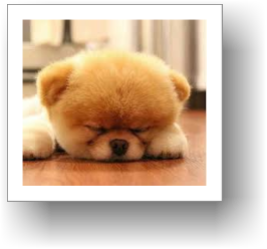
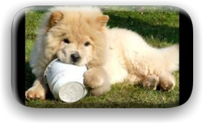
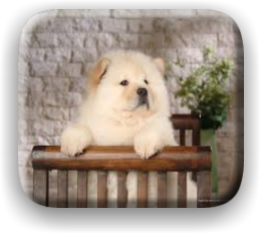
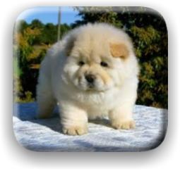

Chow Chow



Chow Chows are from China. Their fur is thick and coarse and they are usually red, cinnamon, black, cream and blue. They are considered one of the oldest breed of dog. Chow Chows have a blue/black tongue and a curly tail.


Home
Back